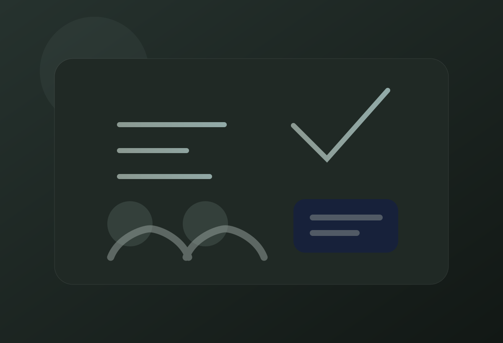

← Portfolio
Academic Tutoring
UIndy Peer Tutoring
Peer tutoring in software engineering, computer science, and physics, with the focus on understanding the reasoning instead of memorizing an answer.

01 / Work
What I actually worked on
I tutor other students in software engineering, computer science, and physics. Most sessions are less about giving somebody a solution and more about finding the exact point where the problem stopped making sense to them.
Tutoring has made me much better at explaining technical ideas without hiding behind jargon. If I cannot explain why a piece of code, an algorithm, or a physics setup works, that usually tells me I need to understand it better too.
03 / Skills
Skills I used and strengthened
01Technical Communication02Problem Decomposition03Debugging04Computer Science Fundamentals05Software Engineering Concepts06Physics Problem Solving07Mentoring08Active Listening